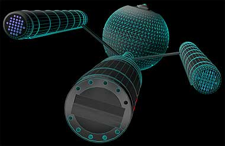
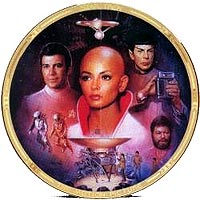
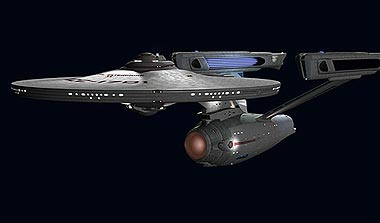
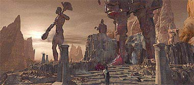

|

Publicado originalmente
em 2000

procura do esprito natalino

|
Vamos admitir: todo mundo adora falar mal de Voyager (Robert Beltran e Ron Moore que o digam), mas at essa Série, apesar de ser a menos dramtica e a mais "light", tem seus bons episódios e atributos. E não estou falando s da Jeri Ryan. Se voc duvida que ainda resta alguma qualidade em Voyager, assista ao último episódio de "Gene Roddenberrys Andromeda", uma Série que, apesar do charme "canastrnico" de Kevin Sorbo e do talentão do ex-roterista de Deep Space Nine Robert Hewitt Wolfe, capaz de assustar até os deuses do Olimpo. não a toa que Hrcules matou Zeus em um episódio de Xena que o USA exibiu semana passada (o adeus de Sorbo ao personagem) --vai ver ele não queria que o pai mitolgico visse em que fria ele ia se meter como capito de uma nave estelar de terceira categoria. Perdido em meio a esse mundo de mediocridade, quando então comecei a matutar em busca do tema para esta terceira coluna que agora voc está lendo (voc ainda está a, no?), queria explorar algo para cima, falar bem de alguma coisa, explorar um aspecto positivo de Jornada e de seus donos, seja Berman, Braga ou qualquer B que me viesse a cabea. Ei, Natal! época. De solidariedade, bons pensamentos e gastar dinheiro com a famlia, a namorada e mais importante: com DVDs! Mas por mais que eu rascunhasse o tema na minha cabea, nenhum espirto do Natal passado (ou, não nosso caso, futuro) me visitou e mostrou o lado bom e positivo do sculo 24, a luz não fim do tnel para o franchise que eu tanto procurava. O que eu posso dizer? Das recentes brigas e baixarias de Kate Janeway Mulgrew e Robert Chakotay Beltran na imprensa (e até em rede nacional --o Ratinho deve estar morrendo de inveja), aos rumores furados de Lolita Fatjo, passando pelas críticas ferrenhas de Ron Moore a Voyager e Série 5 e chegando finalmente s expectativas de um 2001 sem nova Série ou novo filme (continue lendo), logo senti um balde de gua fria --pensando bem, talvez eu esteja mesmo pessimista com relao a Jornada! Mas vamos ver se esse pessimismo apenas um sexto sentido resultante desse mar de fofocas e intrigas que se tornaram as novidades trekkies das ltimas semanas ou se ele baseado mesmo em algo concreto. A pior notcia para comearmos o ano novo e a comemorao dos 35 anos de Jornada que a essa altura do campeonato praticamente impossível que tanto a nova Série como o novo filme cheguem aos EUA em 2001. O que quer dizer que a pobre Sherry Lansing e seus subordinados não estdio vo ter de passar pela primeira vez um aniversrio de Jornada sem um grande eventão para presentear aos fãs, ou melhor dizendo, para vender muito merchandise, publicidade e ingressos. Devido a uma greve iminente dos atores em Hollywood e aos atrasos de John Logan e Brannon Braga na elaborao de seus respectivos roteiros, j deixou de ser fofoca para ser chacota nos corredores da Paramount e da UPN que Jornada X e a Série 5 s chegam mesmo em 2002 --isso se não chover. Ou seja, quando a greve dos atores acabar, em setembro de 2001, (se durar apenas os seis meses prometidos), e tanto o novo filme quanto a nova Série finalmente sarem do papel para a frente das cmeras, não preciso ser matemtico para perceber que essas duas produces s chegariam ao público em 2002 (com uma data de janeiro de 2002 para a nova Série e maio de 2002 para o novo filme, um passarinho azul me contou). Do filme, j sabemos que os Romulanos e Data sero o piv da história (dessa vez, o abelhudo Patrick Stewart chiou, mas não conseguiu substituir os Romulanos por outra raa, como ele fez com os Son'a em "Insurrection"). Mas os rumores sobre o novo filme param a, e boatos sobre a escolha de diretor e atores so, até agora, pura história da carochinha (para se ter idia de como o filme está atrasado, os nicos contratados até o momentão so Stewart, Brent Spiner e John Logan --nem um produtor-executivo foi contratado ainda). Agora, sobre a nova Série, caro leitor, eu vou dar um conselho: não acredite em tudo que ouve por a (ou melhor, acredite --mas desconfie). verdade que há mais de um ano Berman e Braga propuseram ao estdio uma premissa em que um vilo do sculo 29 alteraria a história do sculo 22, e que a nave espacial Enterprise desse sculo (vista em um mural na Enterprise de "Jornada nas Estrelas - O Filme") seria o centro da Série. Sim, esse rumor da proposta pr-Clássica era verdadeiro em finais de 1999, assim como era verdadeira a informação de que a premissa não foi bem recebida pelos executivos da Paramount e da UPN --isso tudo foi confirmado por diversos sites na época. e em nenhum momentão chegou a ser comentado (ou negado) por Berman (o que j sugere muita coisa).  possível que "Star Trek - Enterprise Logs" (o nome circulando por a para a nova Série) seja mesmo pr-Clássica? Sim, . possivel que Berman e Braga tenham alterado a premissa (ou adaptado s necessidades do estdio) para que ela fosse finalmente aprovada pelos executivos? Sim, isso muito normal em Hollywood e aconteceu até com a Série Clássica (algum se lembra de um episódio piloto filmado em 1964, com uma premissa cerebral e com um capito amargurado e srio chamado Christopher Pike?). Mas a verdade que, mesmo depois dos rumores e "dicas" de Ethan "Neelix" Phillips (que como boateiro um timo ator, na minha opinio) e dos ex-empregados da Paramount Lolita Fatjo e Ron Moore apontarem nessa direo, muita gente que eu conheo acima do Equador continua achando a idia suspeita e os boatos improvveis. No acho que mesmo os verdadeiros insiders saibam ao certo do que a nova Série se trata (passado ou futuro? Surgimentão ou morte da Federao? Enterprise-Zero ou Enterprise-G?), mas o que dizem por a : se fosse realmente a pr-Clássica, j saberamos há muito tempo. Por isso, vou ficar com o p atrês por enquanto. Talvez voc deva fazer o mesmo... aproveite e cruze os dedos.  Resta saber se o meticuloso Wise vai topar a empreitada, j que o projeto se tornou bem maior e mais apaixonante para o velhinho do que ele mesmo esperava. O volume de trabalho tem atrasado a edio final do filme, que deveria ser concluda em janeiro, mas teve sua data adiada indefinidamente. informações que recebi de alguns contatos que tenho na Foundation Imaging, a empresa que está cuidando dos novos efeitos especiais, do conta de que o novo filme ser uma edio muito especial, mas não to especial quanto gostariam alguns fãs. Quando o projeto foi iniciado, os envolvidos tinham o objetivo de trazer algumas cenas que estavam não roteiro original, mas que acabaram não entrando não filme por deficincia de efeitos especiais ou tempo para refilmar algumas tomadas. Infelizmente, algumas dessas cenas não puderam ser recuperadas. A sequncia de Kirk e Spock sendo atacados pelas sondas metlicas e o elo mental Vulcano de Spock não chamado Memory Wall não sero includas não DVD, ao contrrio do que diziam os boatos anteriores. além de ter sido confirmada na Foundation, dois membros da equipe de Wise confirmaram a ausência das tomadas não frum do site TrekWeb. Elas foram excludas por duas razes: no foram encontrados nos arquivos da Paramount os negativos das cenas completas, nem o áudio de todos os dilogos filmados em 1978, o que faz com que apenas os efeitos especiais nao dem sentido cena. O outro motivo que para restaurar completamente a sequncia, mesmo com todos os recursos de CGI (imagens geradas por computador) disponveis, o projeto simplesmente sairia caro demais. Tudo que sobrou das tomadas poder ser visto como um dos extras não DVD. Mesmo com essa perda, não d para achar que a nova verso não valha a pena. Parece que um pouco do marasmo que o passeio da Enterprise por dentro do V'ger ser substitudo por empolgao. O ataque de V'Ger Enterprise a cena mais ambiciosa recriada em CGI. Agora a Enteprise faz diversas manobras e aes evasivas (com Decker dando as ordens navegadora), fazendo com que a cena se parea mais com as batalhas espaciais dos outros filmes de Jornada.  A msica também ter atenção especial na nova verso. O diretor Robert Wise, com a ajuda do msico Jerry Goldmsith, conseguiu achar gravações da trilha sonora para diversas das novas cenas --msica que nunca foi ouvida antes (nem não CD especial do filme), fazendo com que diversas cenas que antes no tinha msica agora tenham. E quem se preocupa com a fidelidade ao trabalho original, também pode ficar mais tranqilo. Trabalhando como consultor não projeto está John Dryskta, o criador dos efeitos especiais de V'Ger não filme original, assim como Douglas Trumbull. Eles estão supervisionando todas as criaes da Foundation para que elas não se difereciem muito do seu trabalho. Eles foram convocados para participar do projeto pelo prprio Robert Wise, que achou que algumas cenas estavam ficando "muito modernas". A maior parte dessas informações ainda no foi divulgada, e deve pintar nos sites americanos de Jornada ao longo da semana. Outras fotos (além da que mostra a "nova" Enterprise e o planeta Vulcano) também devem aparecer nos prximos dias, aumentando ainda mais a ansiedade pela verso mais recente da primeira incurso do franchise no cinema.  Quem sabe? Coisas estranhas tm acontecido. E do jeito que o franchise vai indo, talvez Kirk e Spock riam por último, afinal... |
 Ao
ler as minhas colunas anteriores, nos quais respectivamente
profetizo o
Ao
ler as minhas colunas anteriores, nos quais respectivamente
profetizo o